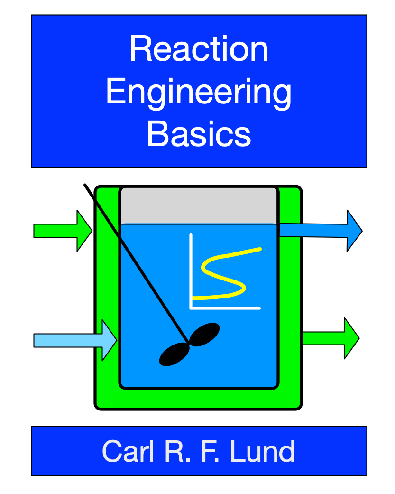

Reaction Engineering Basics
Preface

Reaction Engineering Basics is an introductory textbook on chemical kinetics and reaction engineering. It differs from many other textbooks in two respects. First, instead of starting with single reactions in isothermal reactors, and then introducing non-isothermal operation and multiple reactions in subsequent chapters, it considers multiple reactions systems that require mole and energy balances from the beginning. Second, it differs by assuming numerical methods will be used to solve the reactor model equations and presenting examples accordingly.
Reaction Engineering Basics was written for use in an undergraduate chemical engineering curriculum. The intended audience is students who have completed approximately two years of a four-year chemical engineering degree program. It assumes that readers have completed two semesters of general chemistry, a course on chemical engineering mass and energy balances and, ideally, a course on chemical engineering thermodynamics. Proficiency in algebra, calculus and differential equations is also assumed.
Acknowledgements
I could use any number of clichés here, but instead I’ll just say that my wife, Deb, has been unbelievably supportive of me in my career, and particularly as I wrote this book. I owe her a debt that I can’t hope to repay, but at the very least, I can thank and acknowledge her for all she has done and continues to do. So thanks, Deb, you’re the best!
I was fortunate and blessed to receive a fantastic formal eduction. From grade school through graduate school I’ve been taught by many outstanding educators, and I thank them all. Two in particular stand out. Jim Dumesic, “the Boss,” is one. When he became my PhD advisor, I expected it to be a 4 to 5 year deal. It wasn’t. Jim has been my mentor, trusted advisor and true friend ever since that day. For over forty years, he’s always been there for me, and I can’t thank him enough. The other standout is Phil Wankat. Without going into the details, I was ready to change majors after my first undergraduate chemical engineering course. It didn’t happen because Phil Wankat taught the second chemical engineering course I took, one on stagewise separations. He is the best teacher I ever had, and his teaching and personality are directly responsible for me being a chemical engineer today.
The University at Buffalo, its School of Engineering and Applied Sciences and its Department of Chemical and Biological Engineering have been my professional home since 1986. They have provided an environment that is equally supportive of educational innovation and, in my case, catalysis and reaction engineering research. I appreciate that educational innovation is not only supported, it is recognized and rewarded.
Personally, I believe there is a God who blessed me with the ability, circumstances and perseverence to write this book.
License
This website is licensed under the Creative Commons Attribution-Non-Commercial-NoDerivatives 4.0 International License (CC BY-NC-ND 4.0).